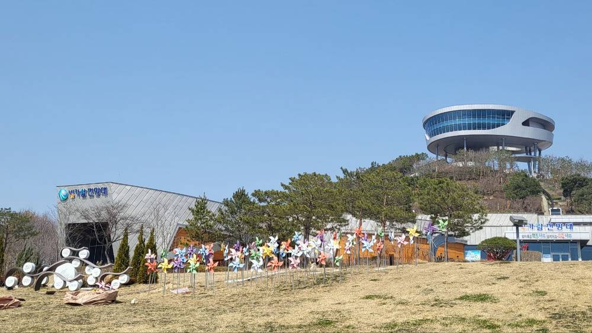

나주 대실마을 주민참여형 에너지 자립 모델, 아시아 10개국 에너지 관계자 35명에 소개…세네갈 500만 달러 ODA로도 이어져

ADB 초청 방문단, 태양광·소형풍력·ESS로 농기계 충전과 마을회관·스마트팜 운영하는 리빙랩 둘러봐…햇빛소득마을 추진 상담도
동신대학교가 전남 나주시 봉황면 대실마을에 만든 주민참여형 에너지 자립 모델을 아시아 10개국 에너지 분야 관계자들에게 선보였다. 지난 12일 '2026 한-ADB 파트너십 콘퍼런스' 사흘째 현장 견학으로 카자흐스탄·라오스·베트남·인도 등 10개국 국장급 인사와 실무자, 아시아개발은행(ADB) 관계자 등 35명이 대실마을 에너지프로슈머 리빙랩을 찾았다. 2023년 조성된 대실마을은 태양광과 소형 풍력, 둘을 합친 복합 발전설비로 전기를 만들어 남는 전기는 한전 전력망으로 팔고, 에너지저장장치(ESS)에 모은 전기는 전기 농기계 충전과 마을회관·스마트팜 운영에 쓰는 실증 마을이다. 동신대는 방문단에 태양광 수익을 주민 소득으로 잇는 햇빛소득마을의 취지와 지역별 적용 방안도 상담했으며, 대학 메이커스페이스사업단은 지역 기업 6곳의 공유 배터리 모빌리티·하이브리드 풍력발전기·에너지관리시스템 등을 전시했다. 대실마을 모델은 2025년 한국국제협력단(KOICA) 사전사업을 거쳐 올해 9월 한전KDN 등과 꾸린 컨소시엄이 500만 달러 규모의 '세네갈 농촌 개발을 위한 에너지자립 역량강화 사업' 본사업에 선정되며 해외 개발협력으로 이어졌다.
시민에너지 관점
한 마을의 실증이 아시아 10개국 관계자의 견학과 500만 달러 규모의 해외 원조 사업으로 이어졌다는 것은, 주민이 쓰고 파는 작은 에너지 모델이 수출할 만한 경쟁력을 갖췄다는 뜻이다. 다만 견학의 주인공이 대학과 기업 시제품에 머물면, 정작 마을 주민이 얼마를 벌고 무엇을 결정하는지는 보이지 않는다. 대실마을의 발전량과 판매 수익, 주민에게 돌아간 몫을 공개해야 다른 나라와 국내 햇빛소득마을이 그대로 참고할 수 있다. 정부는 이런 실증 마을을 연구 과제로 끝내지 말고 주민 협동조합이 소유·운영하는 상설 모델로 넘겨 주기를 바란다.
출처: 전자신문 2026-11-16 김한식 원문 보기
羅州・大実村の住民参加型エネルギー自立モデル、アジア10カ国のエネルギー関係者35人に紹介…セネガルへの500万ドルODAにもつながる
ADB招請訪問団が、太陽光・小型風力・ESSで農機の充電や村の会館・スマートファームを運営するリビングラボを見学…太陽光所得村の推進相談も
東新大学が全羅南道羅州市鳳凰面の大実（テシル）村につくった住民参加型エネルギー自立モデルを、アジア10カ国のエネルギー分野関係者に紹介した。12日、「2026韓国・ADBパートナーシップ会議」3日目の現地見学として、カザフスタン・ラオス・ベトナム・インドなど10カ国の局長級人物や実務者、アジア開発銀行（ADB）関係者ら35人が大実村エネルギープロシューマー・リビングラボを訪れた。2023年に整備された大実村は、太陽光と小型風力、両者を組み合わせた複合発電設備で電気をつくり、余った電気は韓国電力の送電網で販売し、エネルギー貯蔵装置（ESS）にためた電気は電動農機の充電や村の会館・スマートファームの運営に使う実証村だ。東新大は訪問団に、太陽光の収益を住民の所得につなげる太陽光所得村の趣旨と地域ごとの適用方法についても相談に応じ、大学のメイカースペース事業団は地域企業6社のシェアバッテリー・モビリティ、ハイブリッド風力発電機、エネルギー管理システムなどを展示した。大実村モデルは2025年の韓国国際協力団（KOICA）事前事業を経て、今年9月に韓電KDNなどと組んだコンソーシアムが500万ドル規模の「セネガル農村開発のためのエネルギー自立能力強化事業」本事業に選ばれ、海外の開発協力にもつながった。
市民エネルギーの視点
一つの村の実証がアジア10カ国の関係者の見学と500万ドル規模の海外援助事業につながったことは、住民が使い、売る小さなエネルギーモデルが輸出できる競争力を持っているということだ。ただし見学の主役が大学や企業の試作品にとどまれば、肝心の村の住民がいくら稼ぎ、何を決めているのかは見えない。大実村の発電量と販売収益、住民に回った取り分を公開してこそ、他国や国内の太陽光所得村がそのまま参考にできる。政府はこうした実証村を研究課題で終わらせず、住民協同組合が所有・運営する常設モデルに引き継いでほしい。
出典: 전자신문 2026-11-16 김한식 原文を読む
罗州大实村居民参与型能源自立模式向亚洲10国35名能源官员展示…并延伸为500万美元塞内加尔官方发展援助项目
亚洲开发银行邀请的访问团参观以太阳能、小型风电和储能为农机充电、运营村会馆和智慧农场的生活实验室…并咨询“阳光收入村”推进方法
韩国东新大学向亚洲10个国家的能源领域相关人士展示了其在全罗南道罗州市凤凰面大实村建设的居民参与型能源自立模式。12日，作为“2026韩国—亚开行伙伴关系会议”第三天的现场考察，来自哈萨克斯坦、老挝、越南、印度等10国的局长级官员和实务人员以及亚洲开发银行（ADB）相关人士共35人参观了大实村能源产消者生活实验室。大实村于2023年建成，是一个利用太阳能、小型风电以及两者结合的复合发电设施发电的示范村，多余电力通过韩国电力公司电网出售，储存在储能系统（ESS）中的电力用于电动农机充电以及村会馆和智慧农场的运营。东新大学还就把太阳能收益转化为居民收入的“阳光收入村”理念及因地制宜的推广方法为访问团提供了咨询，该校创客空间事业团则展示了6家本地企业的共享电池出行工具、混合风力发电机和能源管理系统等。大实村模式经过2025年韩国国际协力团（KOICA）预备项目后，今年9月由东新大学与韩电KDN等组成的联合体入选规模500万美元的“塞内加尔农村发展能源自立能力强化项目”正式项目，延伸到了海外发展合作。
市民能源视角
一个村庄的示范带来了亚洲10国官员的考察和500万美元规模的海外援助项目，说明居民自用、自售的小型能源模式具备出口竞争力。但如果考察的主角只停留在大学和企业的试制品上，村民究竟赚了多少、能决定什么就看不出来。只有公开大实村的发电量、售电收入和分给居民的份额，其他国家和韩国国内的阳光收入村才能直接借鉴。希望政府不要让这类示范村止步于研究课题，而是把它们移交给居民合作社拥有和运营，成为常设模式。
来源: 전자신문 2026-11-16 김한식 查看原文
Naju's Daesil village resident-participation energy self-sufficiency model shown to 35 energy officials from 10 Asian countries; it has also led to a $5 million ODA project in Senegal
ADB-invited delegation tours living lab using solar, small wind and ESS to charge farm machinery and run the village hall and smart farm, and gets advice on sunlight income villages
Dongshin University showcased the resident-participation energy self-sufficiency model it built in Daesil village, Bonghwang-myeon, Naju, South Jeolla Province, to energy officials from 10 Asian countries. On the 12th, as a field trip on the third day of the 2026 Korea-ADB Partnership Conference, 35 people, including director-level officials and practitioners from 10 countries such as Kazakhstan, Laos, Vietnam and India and staff of the Asian Development Bank (ADB), visited the Daesil Energy Prosumer Living Lab. Set up in 2023, Daesil is a demonstration village that generates power from solar, small wind turbines and hybrid solar-wind units, sells surplus electricity through the KEPCO grid, and uses power stored in an energy storage system (ESS) to charge electric farm machinery and run the village hall and a smart farm. The university also advised the delegation on the idea of "sunlight income villages," which turn solar revenue into resident income, and on how to adapt them locally, while its makerspace program exhibited products from six local firms, including shared-battery mobility, a hybrid wind turbine and an energy management system. After a 2025 Korea International Cooperation Agency (KOICA) preparatory project, the Daesil model expanded into overseas development cooperation in September, when a consortium with KEPCO KDN and others was selected for the $5 million "Energy Self-Sufficiency Capacity Building for Rural Development in Senegal" project.
Citizen Energy View
That one village's demonstration led to a visit by officials from 10 Asian countries and a $5 million overseas aid project shows that small energy models in which residents use and sell their own power are competitive enough to export. But if the stars of the tour remain university and company prototypes, it is hard to see how much the villagers actually earn and what they get to decide. Publishing Daesil's generation, sales revenue and the share returned to residents would let other countries and Korea's own sunlight income villages learn from it directly. The government should not let such demonstration villages end as research projects, and should hand them over as permanent models owned and run by resident cooperatives.
Source: 전자신문 2026-11-16 김한식 Read the original